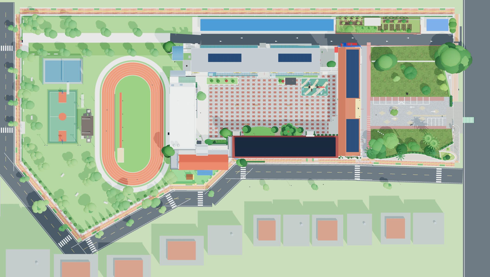

復
360° 實景管理
尚未連線 GitHub（唯讀模式）
⚙ GitHub 連線設定
查看網站 ↗
儲存並發布
全部
1F
2F
3F
＋
－
全校
名稱

拖曳紅點移動位置 · 拖曳空白處平移 · 滾輪縮放（放大後顯示名稱）
在左側清單或地圖上選一個景點來編輯，
或按「＋ 新增景點」。
GitHub 連線設定
管理頁會用這組權杖把修改直接存進 GitHub，網站約 1～10 分鐘後更新。
到 GitHub → Settings → Developer settings →
Fine-grained tokens
→ Generate new token
Repository access 選
Only select repositories
，只勾這個網站的 repo
Permissions → Repository permissions →
Contents：Read and write
（其他都不用開）
產生後複製貼到下方
存取權杖（Token）
帳號 / 組織
Repo 名稱
分支
在這台電腦記住權杖（公用電腦請取消）
權杖只存在這個瀏覽器，不會寫進網站或 repo。可隨時在 GitHub 撤銷。
連線並載入最新資料
清除權杖
關閉
處理中…